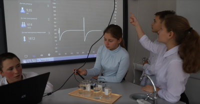
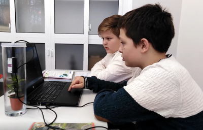

- УЧИТЕЛЬ БИОЛОГИИ И ХИМИИ
- МОУ Лучинская СШ ЯМР
- Стаж 36 лет
- Квалификационная категория: высшая
- Образование: Высшее, ЯГУ
Каждый день – новые открытия, встречи, движение от простого к сложному, от неизвестного к открытиям. Там, где надо всегда быть в движении, чтобы дарить энергию, знания, умения ученикам, получая взамен тепло, уважение и искреннюю любовь - все это школа. Быть учителем – не только учить, но и самому постоянно учиться, творить, идти в ногу с учениками и современными реалиями. Ориентируясь на уникальный личностный потенциал обучающихся, стараюсь развивать интерес к предмету на основе творческой активности ученика и организацию практико – ориентированной среды на уроке с использованием цифровых технологий и как итог веду научно-исследовательскую деятельность обучающихся. Самое главное уметь корректировать цели и задачи в зависимости от выявленного интереса обучающихся, их учебных достижений, создавая ситуацию успеха для каждого ученика. Использование элементов современных образовательных технологий позволяет мне создавать на своих занятиях развивающую среду посредством использования компетентностной модели в образовании, что позволяет выработать каждому ученику определенные компетенций на уровне развития его интеллектуальных и прочих способностей в процессе реализации им своих интересов и желаний, в процессе приложения усилий, взятия на себя ответственности и осуществления действий в направлении поставленных целей. Научить его размышлять, решать проблемы в сегодняшней жизни, а также помочь спрогнозировать те ситуации, с которыми он столкнется в будущем, формирование функциональной грамотности – это основная цель моей педагогической деятельности. Цифровая лаборатория по биологии дает мне возможность менять образовательную среду.. С 2021 года я являюсь руководителем центра образования естественно-научной и технологической грамотности " Точка роста". Совершенствование условий для повышения качества образования, расширение возможностей обучающихся в освоение учебных предметов естественно-научной направленности биологии, химии, физики. Вовлечение обучающихся 1-9 классов в проектную деятельность позволило нам вместе вести экологический мониторинг по направлениям: факторы почвы, воды, воздуха. Под моим руководством реализуется интегрированный проект с привлечением учеников 1-9 классов. Школа дает мне возможность постоянно развиваться так я приняла участие в экспертной комиссии: Жюри VI районной научно-практической конференции школьников "Первые шаги в науку" для обучающихся 5-7 классов ОУ ЯМР. Участие в международных и межрегиональных научно -практических конференциях дает возможность познакомиться с опытом ведущих преподавателей региона и страны. Как и любой человек я имею свои увлечния, так меня очень интересует тема градостроения моего родного города Ярославля, дважды мы с ребятами принимали участие в конкурсе " Отечетсво", занимая призовые место с темой "Особенности градостроения Ярославля", в 2022 г. я принимала участие в работе в экспертной комиссии: Жюри Всероссийского конкурса исследовательских краеведческих работ обучающихся, участников туристско-краеведческого движения «Отечество» (XXIV районный краеведческий конкурс «Люблю тебя, мой край родной»).

МЕТОДИЧЕСКАЯ РАБОТА
-
Методические разработки
- Формирование функциональной грамотности на уроках биологии в основной школе
- Использование элементов сингапурской методики на уроках биологии в условиях ФГОС
- Техники формирующего оценивания на уроках химии
- Технология развития критического мышления во внеурочной деятельности как средство достижения метапредметных результатов
-
Участие в научно-практических конференциях
- Сертификат участника межрегионального онлайн-форума г. Томск
- Сертификат участника международной конференции на базе ЯГПУ им. К.Д. Ушинского
-
Педагогические технологии
- Педагогические технологии
-
Я - наставник
- План работы учителя наставника с молодыми специалистами
ОПЫТ РАБОТЫ
-
Открытые уроки
- Самоанализ урока по теме "Соцветия"
- Технологическая карта открытого урока по теме "Взаимосвязь растений в сообществе"
- Технологическая карта открытого урока по теме "Борьба организма с инфекцией"
- Технологическая карта открытого урока по теме "Химические реакции в водных растворах"
- Технологическая карта открытого урока "Карбоновые кислоты"
ПОВЫШЕНИЕ КВАЛИФИКАЦИИ
-
Повышение квалификации
- https://luch-sch.edu.yar.ru/2023_pen_kpk.pdf
РАБОЧИЕ ПРОГРАММЫ
-
ПРОГРАММЫ УЧЕБНЫЙ ДИСЦИПЛИН
- Программа по биологии 5 класс ФГОС
- Программа по биологии 5-9 класс
- Программа по биологии 10-11 класс
- Программа по химии 8-9 класс
-
ПРОГРАММЫ ВНЕУРОЧНОЙ ДЕЯТЕЛЬНОСТИ
- Программа внеурочной деятельности "Экология"
- Программа внеурочной деятельности "Юный химик"
-
ПРОГРАММЫ ДОПОЛНИТЕЛЬНОГО ОБРАЗОВАНИЯ
- Программа дополнительного образования "Мой край Ярославия"
- Программа дополнительного образования "В стране здоровья"
- Программа дополнительного образования "Технология проекта"
- Программа дополнительного образования "Химия и жизнь"
- Программа дополнительного образования "Живая лаборатория"
- Программа дополнительного образования "Биология и мы"
Опыт использования цифрового оборудования центра образования "Точки роста"
-
1. Практико-ориентированный урок в 8 классе по теме "Электролитическая диссоциация" с использованием цифровой лаборатории по химии центра образования "Точка роста"
-
2. Практико-ориентированный урок в 6 классе по теме "Условия прорастания семян" с использованием цифровой лаборатории по химии центра образования "Точка роста"
-
3. Занятие дополнительного образования в 8 классе по теме "Влияние PH среды на жизнедеятельность бактерий" с использованием цифровой лаборатории по химии центра образования "Точка роста"
-
4. Занятие внеурочной деятельности в 6 классе в рамках реализации интегрированного проекта "Экологический мониторинг воды" с использованием цифровой лаборатории по химии центра образования "Точка роста"
- 
-
5. Практико-ориентированный урок в 6 классе по теме "Фотосинтез" с использованием цифровой лаборатории по биологии центра образования "Точка роста"
- 
МОИ ДОСТИЖЕНИЯ
-
МОИ ДОСТИЖЕНИЯ
- https://luch-sch.edu.yar.ru/2023pen_moi_dostizheniya.pdf
ДОСТИЖЕНИЯ УЧЕНИКОВ
-
ДОСТИЖЕНИЯ УЧЕНИКОВ
- https://luch-sch.edu.yar.ru/2023_pen_dostideniya_uchenikov.pdf
УЧЕНИКУ
-
УЧИМСЯ РЕШАТЬ ЗАДАЧИ ПО ХИМИИ 8-9 класс
- Методика решения задач по химии предназначена для самостоятельной работы учеников (вычисления по химическим формулам)
- Методика решения задач по химии предназначена для самостоятельной работы учеников (вычисления по химическим уравнениям
-
ЭЛЕКТРОННЫЕ ОБРАЗОВАТЕЛЬНЫЕ РЕСУРСЫ
-
Химия
Единая коллекция ЦОР: Предметная коллекция «Химия»
http://school-collection.edu.ru/collection/chemistryОсновы химии: электронный учебник
http://www.hemi.nsu.ruСайт «Виртуальная химическая школа»
http://maratakm.narod.ruХимическая страничка Ярославского Центра телекоммуникаций и информационных систем в образовании
https://www.edu.yar.ru/russian/cources/chemЭлектронная библиотека учебных материалов по химии на портале Chemnet
http://www.chem.msu.su/rus/elibrary -
Биология и Экология
Единая коллекция ЦОР. Предметная коллекция «Биология»
http://school-collection.edu.ru/collectionРедкие и исчезающие животные России и зарубежья
http://www.nature.ok.ruСохраняем и изучаем водоемы: экологический проект
http://edu.greensail.ruЦентр экологического образования МГДД(Ю)Т
http://moseco.narod.ruЭлектронный учебник по биологии
http://www.ebio.ru -
Олимпиады и Конкурсы
СИРИУС – олимпиады
https://sochisirius.ru/Дистанционная эколого-биологическая викторина – телекоммуникационный образовательный проект
https://projects.edu.yar.ru/biology/archive.html
-
ПОДГОТОВКА К ЭКЗАМЕНАМ И ВПР
- Образцы и описание проверочных работ
ИНФОРМАЦИЯ ДЛЯ РОДИТЕЛЕЙ
-
УЧИМСЯ ВМЕСТЕ
-
Ссылки на образовательные ресурсы
Каталог информационной системы «Единое окно доступа к образовательным ресурсам»
http://window.edu.ru/window/catalogКаталог Российского общеобразовательного портала
http://www.school.edu.ruКаталог «Образовательные ресурсы сети Интернет для общего образования»
http://catalog.iot.ruКаталог «Школьный Яндекс»
http://school.yandex.ruФедеральный центр информационно-образовательных ресурсов
http://fcior.edu.ruИнформационная система «Единое окно доступа к образовательным ресурсам»
http://window.edu.ru2.
Учи.ру3.
Я -класс
-
ВЫБИРАЕМ ПРОГРАММУ ДОПОЛНИТЕЛЬНОГО ОБРАЗОВАНИЯ
- Памятка по зачислению детей на программы ПФДО
-
Программы дополнительного образования